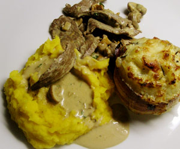

Gratinierte, gefüllte Zwiebel
5 von 64 Grosse Zwiebeln schälen, in Wasser 10-15 Min vorkochen, herausnehmen, abkühlen.
Spitzen abschneiden, nicht zu sehr aushöhlen u. unten ggf. flach schneiden.
Das Innere klein schneiden u. in Olivenöl braten, salzen + pfeffern. 1 Knoblauchzehe in Scheiben schneiden, dazugeben. Von Rosmarinzweigen (je Zwiebel einen) die unteren Nadeln abstreifen, hacken, zur Füllung geben u. braten, bis alles weich ist. Hitze herunterdrehen. Creme double u. etwas Parmesan zur Füllung geben. Die Zwiebeln je mit einer Speckscheibe umwickeln, mit einem angespitzten Rosmarinzweig feststecken. (Sieht gut aus!) Füllung in die Zwiebeln verteilen. Noch etwas Parmesan darüber geben u. im Ofen 25 Min. bei 200° C überbacken.
